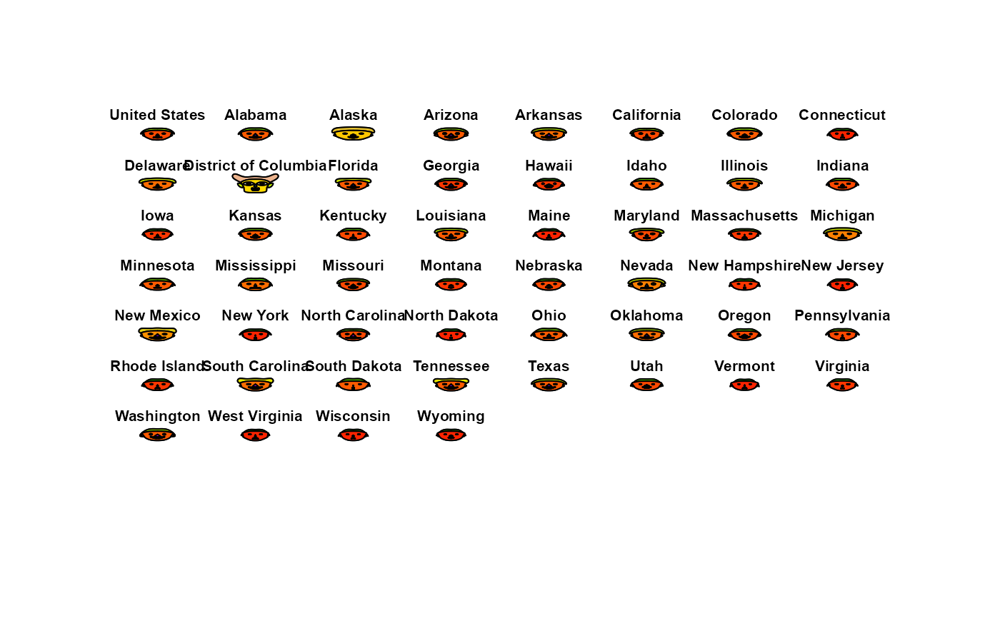

Rates of seven types of serious crime in the United States in 2005, for each of the 50 states
and the District of Columbia, together with the rates for the country as a whole.
The rates are the numbers of offenses per 100,000 population.
Nathan Yau used these data to illustrate Chernoff faces, drawn with aplpack::faces().
Format
A data frame with 52 observations on the following 8 variables.
statename of the state, a character vector. The first row,
"United States", gives the national rates.murderrate of murder
forcible_raperate of forcible rape
robberyrate of robbery
aggravated_assaultrate of aggravated assault
burglaryrate of burglary
larceny_theftrate of larceny and theft
motor_vehicle_theftrate of motor vehicle theft
Source
Nathan Yau (2010), "How to visualize data with cartoonish faces ala Chernoff",
https://flowingdata.com/2010/08/31/how-to-visualize-data-with-cartoonish-faces/.
The data file was http://datasets.flowingdata.com/crimeRatesByState-formatted.csv.
Infochimps, "Crime Rates by State, 2004 and 2005, and by Type, 2005 (cleaned up)",
http://infochimps.org/datasets/crime-rates-by-state-2004-and-2005-and-by-type-2005-cleaned-up-v--2
U.S. Census Bureau (2007), Statistical Abstract of the United States: 2008, Table 301.
Details
The data are from Table 301, "Crime Rates by State, 2004 and 2005, and by Type, 2005", of the Statistical Abstract of the United States: 2008. Yau obtained a version of this table from Infochimps, and reduced it to the rates by type of crime.
The state names in his file have trailing blanks, which have been removed here.
Examples
data(crime)
str(crime)
#> 'data.frame': 52 obs. of 8 variables:
#> $ state : chr "United States" "Alabama" "Alaska" "Arizona" ...
#> $ murder : num 5.6 8.2 4.8 7.5 6.7 6.9 3.7 2.9 4.4 35.4 ...
#> $ forcible_rape : num 31.7 34.3 81.1 33.8 42.9 26 43.4 20 44.7 30.2 ...
#> $ robbery : num 140.7 141.4 80.9 144.4 91.1 ...
#> $ aggravated_assault : num 291 248 465 327 387 ...
#> $ burglary : num 727 954 622 948 1085 ...
#> $ larceny_theft : num 2286 2650 2599 2965 2711 ...
#> $ motor_vehicle_theft: num 417 288 391 924 262 ...
# the states with the highest murder rates
head(crime[order(-crime$murder), 1:5])
#> state murder forcible_rape robbery aggravated_assault
#> 10 District of Columbia 35.4 30.2 672.1 721.3
#> 20 Louisiana 9.9 31.4 118.0 435.1
#> 22 Maryland 9.9 22.6 256.7 413.8
#> 30 Nevada 8.5 42.1 194.7 361.5
#> 2 Alabama 8.2 34.3 141.4 247.8
#> 4 Arizona 7.5 33.8 144.4 327.4
# Chernoff faces, as in the source
if (requireNamespace("aplpack", quietly = TRUE)) {
aplpack::faces(crime[, 2:8], labels = crime$state, cex = 1)
}

#> effect of variables:
#> modified item Var
#> "height of face " "murder"
#> "width of face " "forcible_rape"
#> "structure of face" "robbery"
#> "height of mouth " "aggravated_assault"
#> "width of mouth " "burglary"
#> "smiling " "larceny_theft"
#> "height of eyes " "motor_vehicle_theft"
#> "width of eyes " "murder"
#> "height of hair " "forcible_rape"
#> "width of hair " "robbery"
#> "style of hair " "aggravated_assault"
#> "height of nose " "burglary"
#> "width of nose " "larceny_theft"
#> "width of ear " "motor_vehicle_theft"
#> "height of ear " "murder"